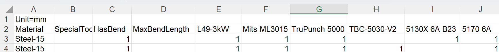

Routes
Según su licencia, TruSmartCAM tendrá un conjunto predeterminado de máquinas CAM y configuraciones de enrutamiento. Usted puede personalizar estas configuraciones para adaptarlas a sus flujos de trabajo de fabricación específicos.

En la página de routes, las máquinas se representan como estaciones de procesamiento, cada una identificada por una imagen y un nombre.
Las rutas conectan las estaciones, mostrando las posibles trayectorias de flujo de trabajo que una pieza puede seguir desde el inicio hasta el final. Usted puede ver las propiedades de la estación colocando el cursor sobre una estación con el mouse.
Hacer clic en una estación abre un panel con información detallada sobre esa estación, incluyendo su nombre, tipo y estado de disponibilidad.
-
Para editar la disponibilidad de la estación, haga clic en la estación y active o desactive la casilla de verificación _Habilitado en el panel.
Exportar/Importar configuraciones de enrutamiento
La función Export/Import permite a los usuarios guardar sus configuraciones de enrutamiento actuales y aplicarlas a otros proyectos o instancias.

Export CAD routes
Haga clic en Export CAD routes… para guardar todas las reglas de condición de ruta actuales en un archivo CSV.

El CSV enumera los materiales y sus condiciones de enrutamiento. Las columnas representan nombres de máquinas y condiciones (por ejemplo, Material, SpecialTool, HasBend, MaxBendLength). Un valor de 1 indica enrutamiento a una máquina; una celda en blanco significa sin enrutamiento.
Usted puede modificar este CSV y volver a importarlo al sistema.
Import CAD routes
Use Import CAD routes… para aplicar un archivo CSV modificado.
| Antes de importar, ejecute Reset CAD routes para limpiar las configuraciones existentes. |
El sistema lee el archivo y actualiza las condiciones de ruta. Las reglas pueden incluir condiciones como HasBend y MaxBendLength.

Si HasBend = 1, la regla se aplica a piezas con dobleces.
Si MaxBendLength =1, la regla limita además según la longitud de doblez más larga de la pieza.
La pieza 00.13 tiene un doblez más largo de 500 mm. Coincide con la primera regla, por lo que TBC-5030-V2 se excluye.

La pieza 00.20 tiene un doblez más largo de 600 mm. No coincide con la primera regla y sigue la segunda regla, enrutándose a todas las máquinas.

Reset CAD routes
Use Reset CAD routes para limpiar todas las configuraciones existentes antes de importar un nuevo CSV.
| Si usted importa sin restablecer, las reglas antiguas pueden entrar en conflicto con las nuevas. |